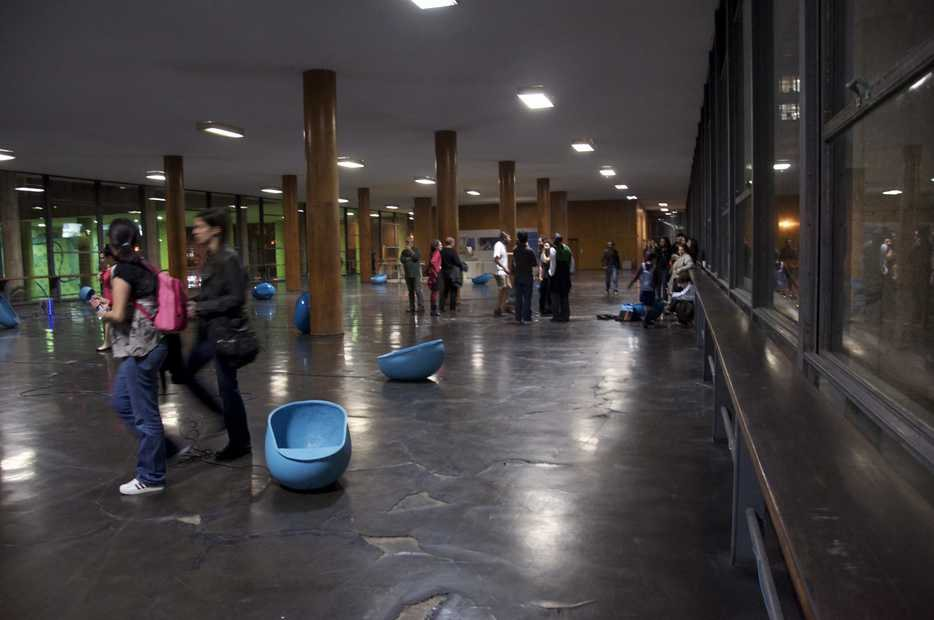

A Cidade Sonora
Projéteis Contemporary Art Award, Funarte, 2012
Sound recording in preparation.
Installation with public phone booths laid on the floor, playing soundscapes of fifteen cities. Projéteis Contemporary Art Award, Funarte; Galeria Funarte, Palácio Gustavo Capanema, Rio de Janeiro, 2012.
- Award
- Projéteis Contemporary Art Award, Funarte, 2012
- Materials
- Public phone booths, soundscapes of 15 cities
- Dimensions
- Variable dimensions
- Venue
- Galeria Funarte, Palácio Gustavo Capanema, Rio de Janeiro
- Exhibition
- A Cidade Sonora (2012)
